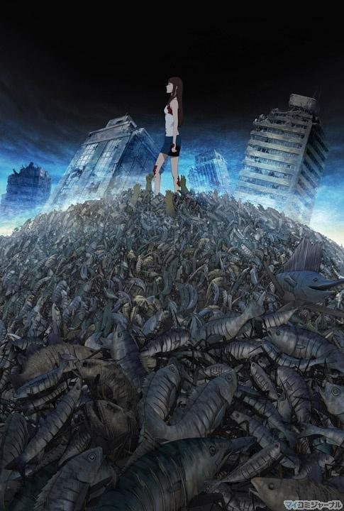
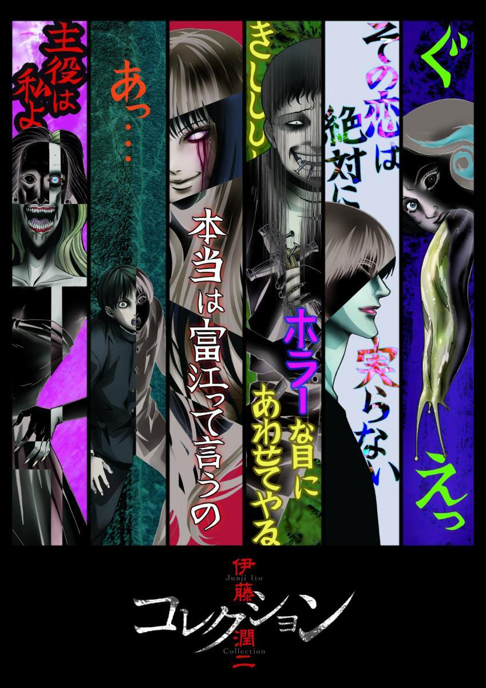
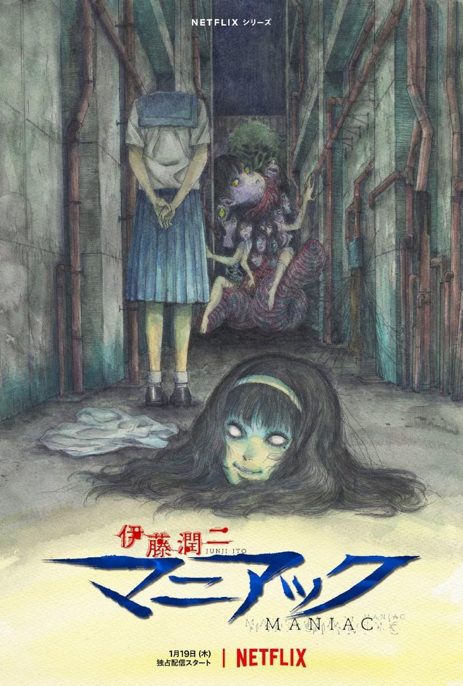

Anime
| Titulo | Año | Dirección | |
| Gyo:Tokyo fish attack | 2012 | Takayuki Hirao |  |
| Titulo | Año | Dirección | Estudio de animación | |
| Uzumaki | 2024 | Hiroshi Nagahama | Production I.G. y Drive |  |
| Junji Ito Collection | 2018 | Shinobu Tagashira | Studio DEEN |  |
| Junji Ito Maniac: Japanese Tales of the Macabre | 2023 | Shinobu Tagashira | Studio DEEN |  |